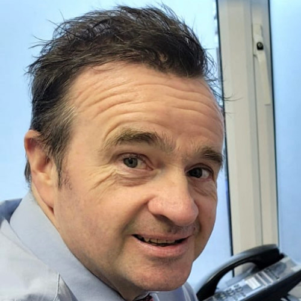
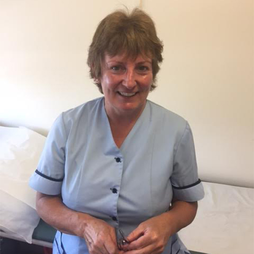
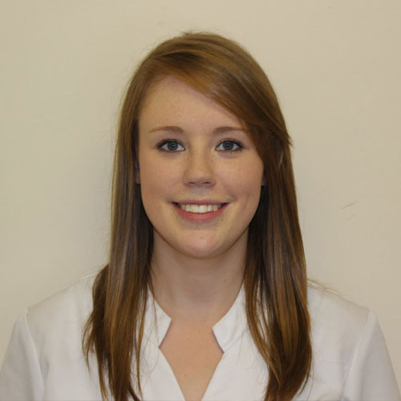

Care for every age. Support at every stage.
Meet the doctors, nurses and reception team who look after you.
GP Principal
GP and Clinical Lead
GP, with interest in Women’s Health
GP, with interest in Dermatology and Joint Injection

Clinical Lead

Midwife

Practice Nurse
Practice Manager
Reception